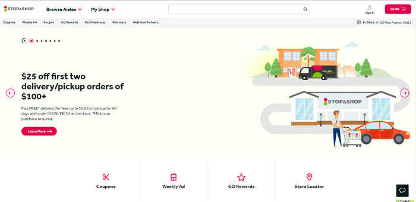
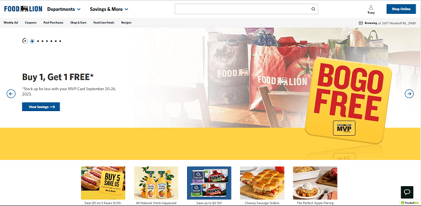

Visual Hierarchy
Stop and Shop
stopandshop.com Stop and Shop's landing page is guiding you to use their new program to have your groceries ready when you get to the store, or even delivered to your house. They use white space to allow a stranger focus on the image of the pick-up or delivery guiding you to click the lean more button to take action to learn more about the program.
Hick's Law
Google has simplified the interface into a few simple choices with the primary purpose in the center and right below their name. More complex choices can be chosen in subsequent steps, but for this example the quick decision can be made as you can quickly enter your search string in the one box provided to make a search. Many of the older additional options that were rarely used have been removed from this front page.
Fitt's Law
Food Lion
foodlion.com Food Lion uses size to jump out and tell you that you will save money if you shop at their stores using their loyalty card. The close proximity of some of the perceived best offers are visible closest to the large eye catcher to guide you to investigate more on what exactly you can save with them on your next trip to their store.